flare.cd.df$Agecat<-cut(flare.cd.df$Age,c(0, 18, 30, 45, 65, Inf), labels =c("< 18", "18-29", "30-44", "45-64", ">=65"), right =FALSE)fit<-survfit(Surv(softflare_time, softflare)~Agecat, data =flare.cd.df)p<-ggsurvplot(fit, data =flare.cd.df, conf.int =TRUE, pval =TRUE, pval.method =TRUE, ggtheme =theme_minimal(), risk.table =TRUE, legend.title ="Age", palette =c("#1A8FE3", "#E76D83", "#5FB49C", "#FED766", "green"), xlab ="Time from study recrutiment (days)", title ="Time to soft flare", break.time.by =200)cairo_pdf("../plots/cd/soft-flare/demographics/age.pdf")pinvisible(dev.off())png("../plots/cd/soft-flare/demographics/age.png", width =7, height =7, units ="in", res =300)pinvisible(dev.off())p
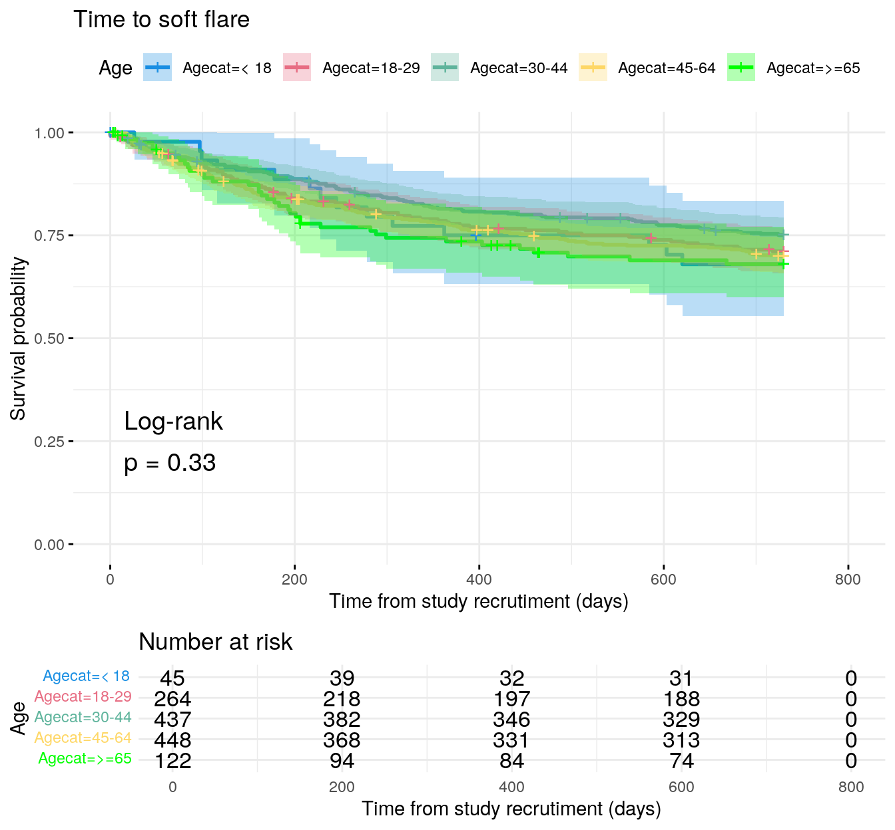
Code
fit.me<-coxph(Surv(softflare_time, softflare)~Sex+IMD+cat+Age+frailty(SiteNo), control =coxph.control(outer.max =20), data =flare.cd.df)invisible(cox.summary(fit.me))
Warning: `gather_()` was deprecated in tidyr 1.2.0.
ℹ Please use `gather()` instead.
ℹ The deprecated feature was likely used in the survminer package.
Please report the issue at <https://github.com/kassambara/survminer/issues>.
`geom_smooth()` using formula = 'y ~ x'
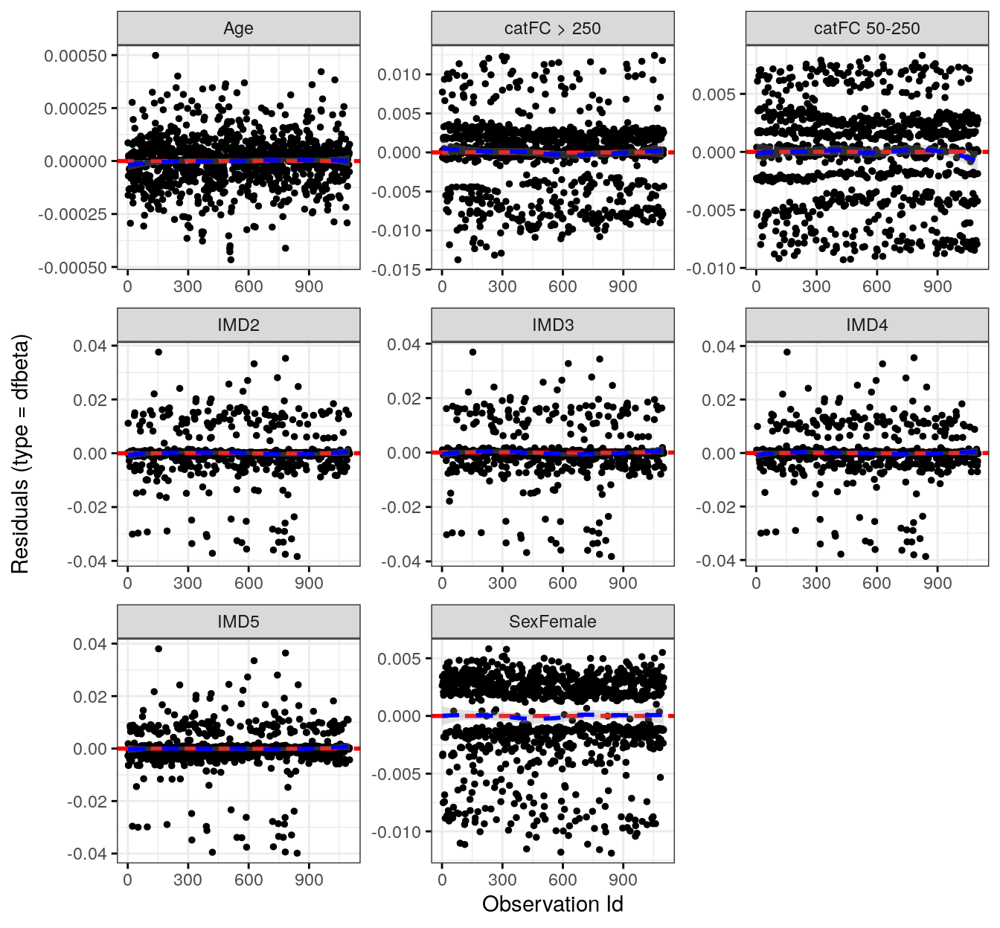
`geom_smooth()` using formula = 'y ~ x'
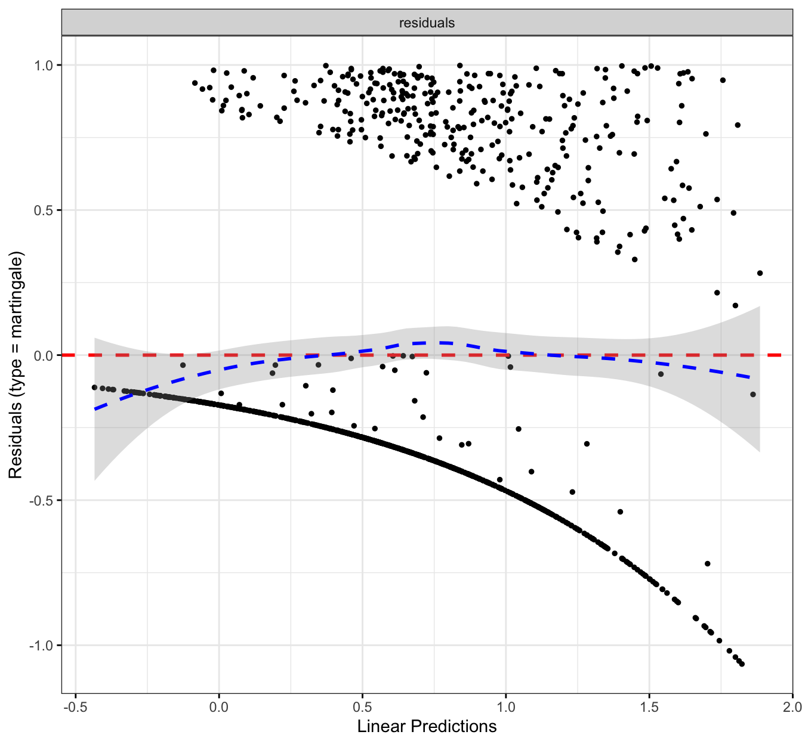
Code
fit<-survfit(Surv(hardflare_time, hardflare)~Agecat, data =flare.cd.df)p<-ggsurvplot(fit, data =flare.cd.df, conf.int =TRUE, pval =TRUE, pval.method =TRUE, ggtheme =theme_minimal(), risk.table =TRUE, legend.title ="Age", palette =c("#1A8FE3", "#E76D83", "#5FB49C", "#FED766", "green"), xlab ="Time from study recrutiment (days)", title ="Time to hard flare", break.time.by =500)cairo_pdf("../plots/cd/hard-flare/demographics/age.pdf")pinvisible(dev.off())png("../plots/cd/hard-flare/demographics/age.png", width =7, height =7, units ="in", res =300)pinvisible(dev.off())p
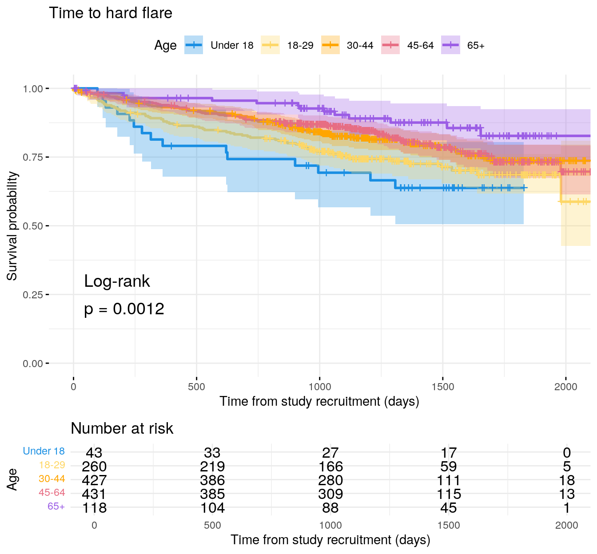
Code
fit.me<-coxph(Surv(hardflare_time, hardflare)~Sex+IMD+cat+Age+frailty(SiteNo), control =coxph.control(outer.max =20), data =flare.cd.df)invisible(cox.summary(fit.me))
flare.uc.df$Agecat<-cut(flare.uc.df$Age,c(0, 18, 30, 45, 65, Inf), labels =c("< 18", "18-29", "30-44", "45-64", ">=65"), right =FALSE)fit<-survfit(Surv(softflare_time, softflare)~Agecat, data =flare.uc.df)p<-ggsurvplot(fit, data =flare.uc.df, conf.int =TRUE, pval =TRUE, pval.method =TRUE, ggtheme =theme_minimal(), risk.table =TRUE, legend.title ="Age", palette =c("#1A8FE3", "#E76D83", "#5FB49C", "#FED766", "green"), xlab ="Time from study recrutiment (days)", title ="Time to soft flare", break.time.by =200)cairo_pdf("../plots/uc/soft-flare/demographics/age.pdf")pinvisible(dev.off())png("../plots/uc/soft-flare/demographics/age.png", width =7, height =7, units ="in", res =300)pinvisible(dev.off())p
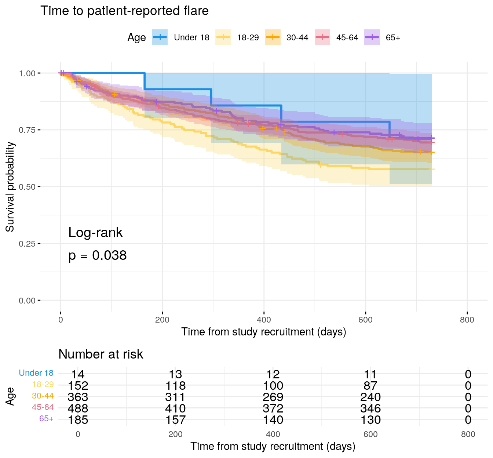
Code
fit.me<-coxph(Surv(softflare_time, softflare)~Sex+IMD+cat+Age+frailty(SiteNo), control =coxph.control(outer.max =20), data =flare.uc.df)invisible(cox.summary(fit.me))
fit<-survfit(Surv(hardflare_time, hardflare)~Agecat, data =flare.uc.df)p<-ggsurvplot(fit, data =flare.uc.df, conf.int =TRUE, pval =TRUE, pval.method =TRUE, ggtheme =theme_minimal(), risk.table =TRUE, legend.title ="Age", palette =c("#1A8FE3", "#E76D83", "#5FB49C", "#FED766", "green"), xlab ="Time from study recrutiment (days)", title ="Time to hard flare", break.time.by =500)cairo_pdf("../plots/uc/hard-flare/demographics/age.pdf")pinvisible(dev.off())png("../plots/uc/hard-flare/demographics/age.png", width =7, height =7, units ="in", res =300)pinvisible(dev.off())p
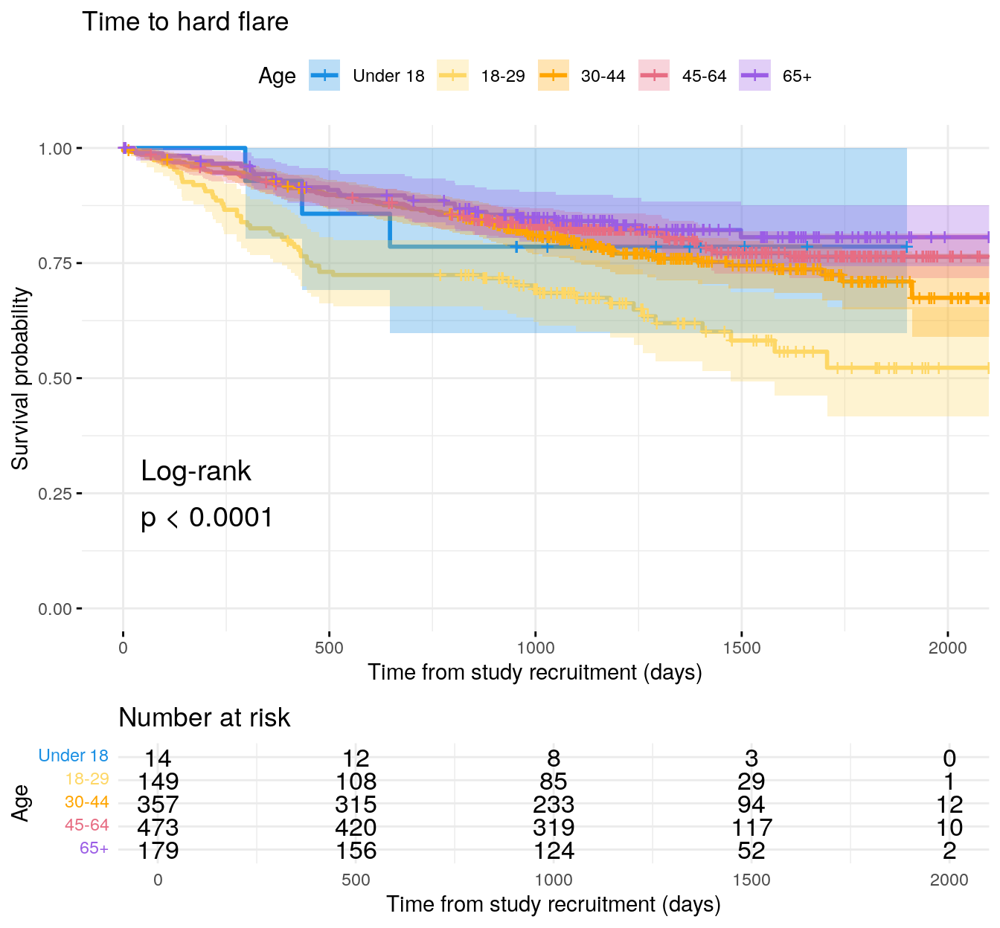
Code
fit.me<-coxph(Surv(hardflare_time, hardflare)~Sex+IMD+cat+Age+frailty(SiteNo), control =coxph.control(outer.max =20), data =flare.uc.df)invisible(cox.summary(fit.me))
fit<-survfit(Surv(softflare_time, softflare)~Sex, data =flare.cd.df)p<-ggsurvplot(fit, data =flare.cd.df, conf.int =TRUE, pval =TRUE, pval.method =TRUE, ggtheme =theme_minimal(), risk.table =TRUE, legend.title ="Sex", palette =c("#1A8FE3", "#E76D83"), xlab ="Time from study recrutiment (days)", title ="Time to soft flare", break.time.by =200)cairo_pdf("../plots/cd/soft-flare/demographics/sex.pdf")pinvisible(dev.off())png("../plots/cd/soft-flare/demographics/sex.png", width =7, height =7, units ="in", res =300)pinvisible(dev.off())p
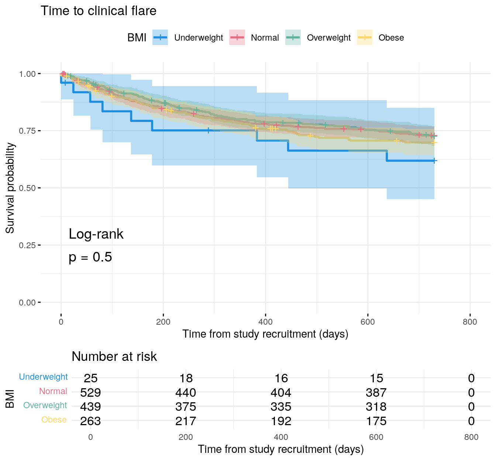
Code
fit.me<-coxph(Surv(softflare_time, softflare)~Sex+IMD+cat+Sex+frailty(SiteNo), control =coxph.control(outer.max =20), data =flare.cd.df)invisible(cox.summary(fit.me))
fit<-survfit(Surv(hardflare_time, hardflare)~Sex, data =flare.cd.df)p<-ggsurvplot(fit, data =flare.cd.df, conf.int =TRUE, pval =TRUE, pval.method =TRUE, ggtheme =theme_minimal(), risk.table =TRUE, legend.title ="Sex", palette =c("#1A8FE3", "#E76D83"), xlab ="Time from study recrutiment (days)", title ="Time to hard flare", break.time.by =500)cairo_pdf("../plots/cd/hard-flare/demographics/sex.pdf")pinvisible(dev.off())png("../plots/cd/hard-flare/demographics/sex.png", width =7, height =7, units ="in", res =300)pinvisible(dev.off())p
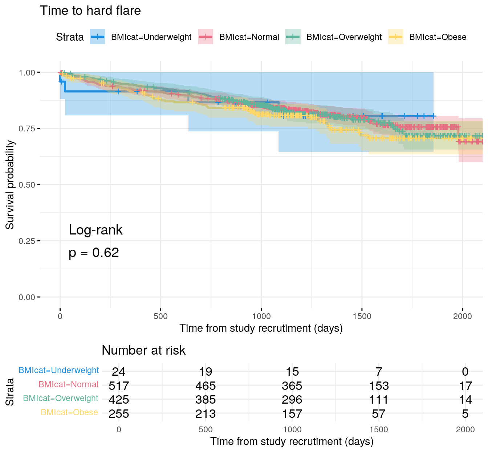
Code
fit.me<-coxph(Surv(hardflare_time, hardflare)~Sex+IMD+cat+Sex+frailty(SiteNo), control =coxph.control(outer.max =20), data =flare.cd.df)invisible(cox.summary(fit.me))
fit<-survfit(Surv(softflare_time, softflare)~Sex, data =flare.uc.df)p<-ggsurvplot(fit, data =flare.uc.df, conf.int =TRUE, pval =TRUE, pval.method =TRUE, ggtheme =theme_minimal(), risk.table =TRUE, legend.title ="Sex", palette =c("#1A8FE3", "#E76D83"), xlab ="Time from study recrutiment (days)", title ="Time to soft flare", break.time.by =200)cairo_pdf("../plots/uc/soft-flare/demographics/sex.pdf")pinvisible(dev.off())png("../plots/uc/soft-flare/demographics/sex.png", width =7, height =7, units ="in", res =300)pinvisible(dev.off())p
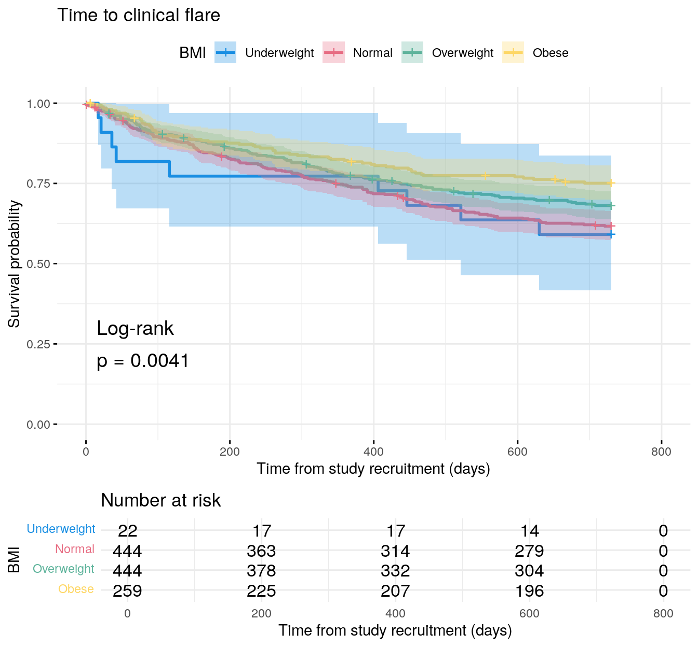
Code
fit.me<-coxph(Surv(softflare_time, softflare)~Sex+IMD+cat+Sex+frailty(SiteNo), control =coxph.control(outer.max =20), data =flare.uc.df)invisible(cox.summary(fit.me))
fit<-survfit(Surv(hardflare_time, hardflare)~Sex, data =flare.uc.df)p<-ggsurvplot(fit, data =flare.uc.df, conf.int =TRUE, pval =TRUE, pval.method =TRUE, ggtheme =theme_minimal(), risk.table =TRUE, legend.title ="Sex", palette =c("#1A8FE3", "#E76D83"), xlab ="Time from study recrutiment (days)", title ="Time to hard flare", break.time.by =500)cairo_pdf("../plots/uc/hard-flare/demographics/sex.pdf")pinvisible(dev.off())png("../plots/uc/hard-flare/demographics/sex.png", width =7, height =7, units ="in", res =300)pinvisible(dev.off())p
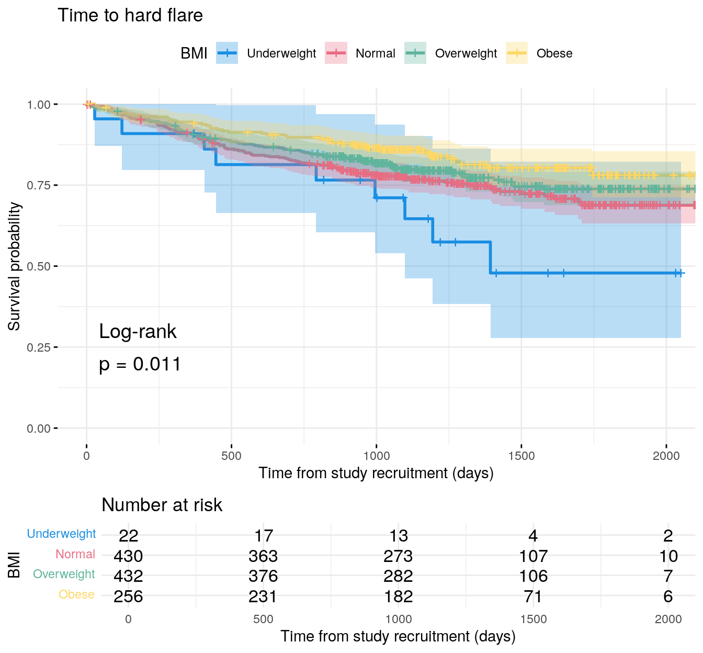
Code
fit.me<-coxph(Surv(hardflare_time, hardflare)~Sex+IMD+cat+Sex+frailty(SiteNo), control =coxph.control(outer.max =20), data =flare.uc.df)invisible(cox.summary(fit.me))
fit<-survfit(Surv(softflare_time, softflare)~BMIcat, data =flare.cd.df)p<-ggsurvplot(fit, data =flare.cd.df, conf.int =TRUE, pval =TRUE, pval.method =TRUE, ggtheme =theme_minimal(), risk.table =TRUE, legend.title ="BMI", palette =c("#1A8FE3", "#E76D83", "#5FB49C", "#FED766"), xlab ="Time from study recrutiment (days)", title ="Time to soft flare", break.time.by =200)cairo_pdf("../plots/cd/soft-flare/demographics/bmi.pdf")pinvisible(dev.off())png("../plots/cd/soft-flare/demographics/bmi.png", width =7, height =7, units ="in", res =300)pinvisible(dev.off())p
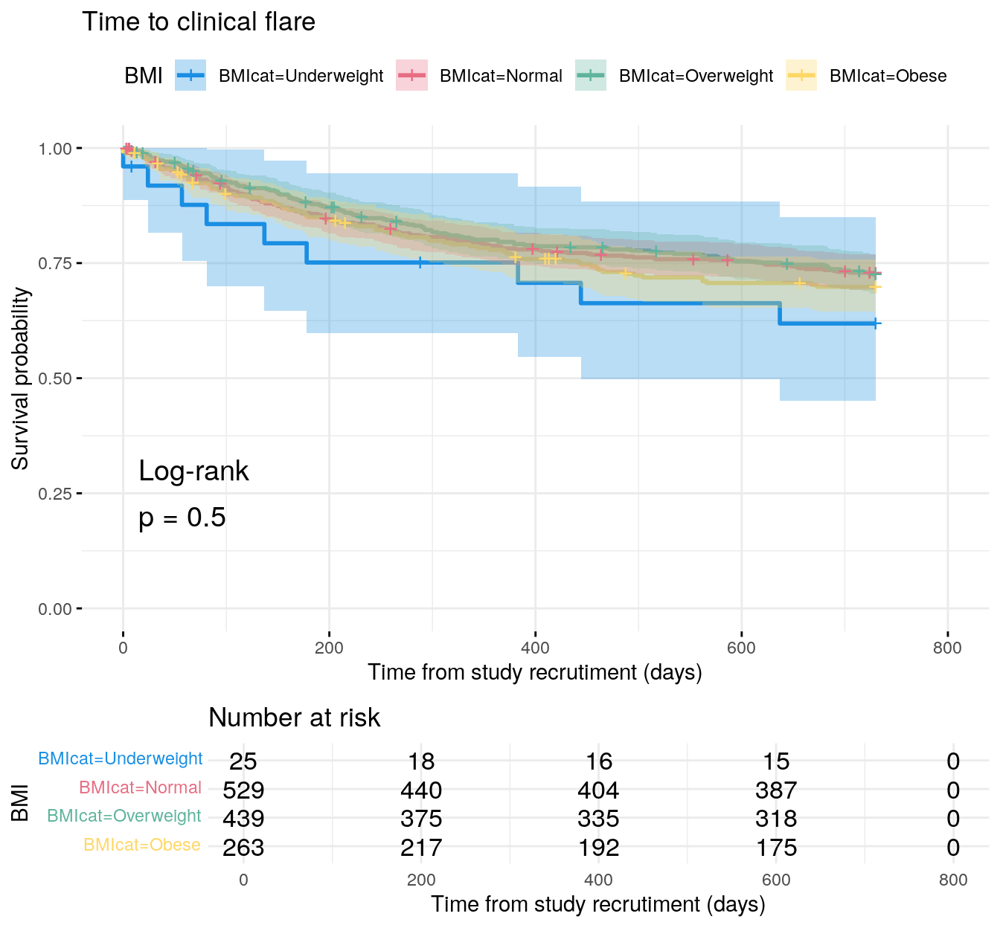
Code
fit.me<-coxph(Surv(softflare_time, softflare)~Sex+IMD+cat+BMI+frailty(SiteNo), control =coxph.control(outer.max =20), data =flare.cd.df)invisible(cox.summary(fit.me))
fit.me<-coxph(Surv(softflare_time, softflare)~Sex+IMD+cat+BMIcat+frailty(SiteNo), control =coxph.control(outer.max =20), data =flare.cd.df)invisible(cox.summary(fit.me))
fit<-survfit(Surv(hardflare_time, hardflare)~BMIcat, data =flare.cd.df)p<-ggsurvplot(fit, data =flare.cd.df, conf.int =TRUE, pval =TRUE, pval.method =TRUE, ggtheme =theme_minimal(), risk.table =TRUE, palette =c("#1A8FE3", "#E76D83", "#5FB49C", "#FED766"), xlab ="Time from study recrutiment (days)", title ="Time to hard flare", break.time.by =500)cairo_pdf("../plots/cd/hard-flare/demographics/bmi.pdf")pinvisible(dev.off())png("../plots/cd/hard-flare/demographics/bmi.png", width =7, height =7, units ="in", res =300)pinvisible(dev.off())p
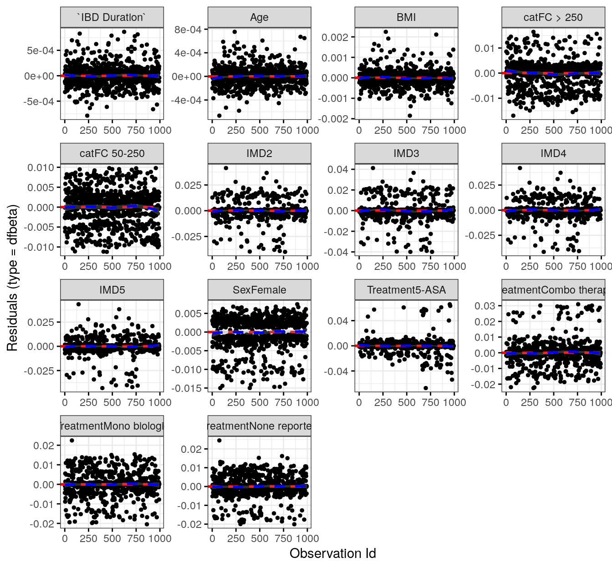
Code
fit.me<-coxph(Surv(hardflare_time, hardflare)~Sex+IMD+cat+BMI+frailty(SiteNo), control =coxph.control(outer.max =20), data =flare.cd.df)invisible(cox.summary(fit.me))
fit.me<-coxph(Surv(hardflare_time, hardflare)~Sex+IMD+cat+BMIcat+frailty(SiteNo), control =coxph.control(outer.max =20), data =flare.cd.df)invisible(cox.summary(fit.me))
fit<-survfit(Surv(softflare_time, softflare)~BMIcat, data =flare.uc.df)p<-ggsurvplot(fit, data =flare.uc.df, conf.int =TRUE, pval =TRUE, pval.method =TRUE, ggtheme =theme_minimal(), risk.table =TRUE, palette =c("#1A8FE3", "#E76D83", "#5FB49C", "#FED766"), xlab ="Time from study recrutiment (days)", title ="Time to soft flare", break.time.by =200)cairo_pdf("../plots/uc/soft-flare/demographics/bmi.pdf")pinvisible(dev.off())png("../plots/uc/soft-flare/demographics/bmi.png", width =7, height =7, units ="in", res =300)pinvisible(dev.off())p
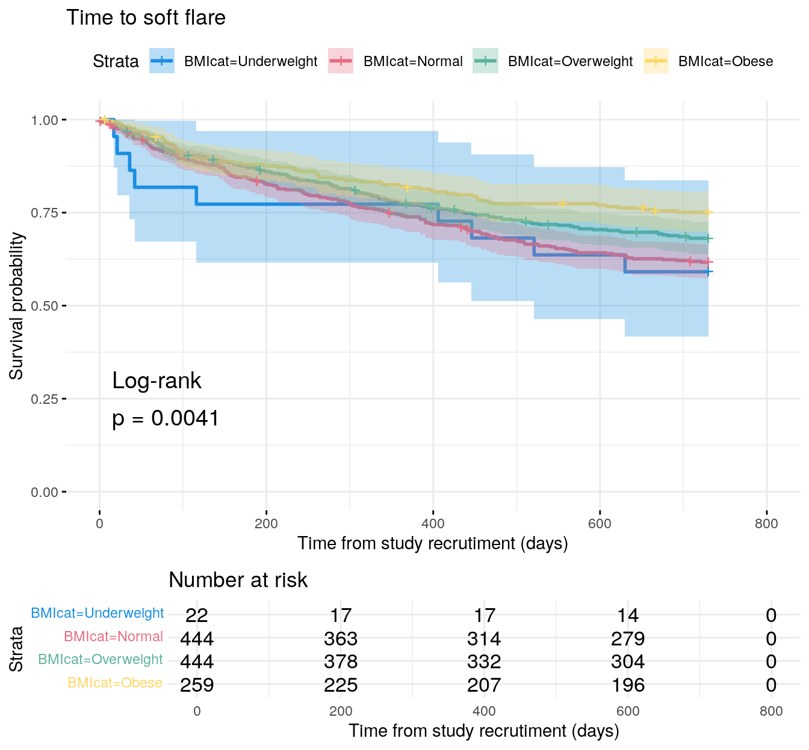
Code
fit.me<-coxph(Surv(softflare_time, softflare)~Sex+IMD+cat+BMI+frailty(SiteNo), control =coxph.control(outer.max =20), data =flare.uc.df)invisible(cox.summary(fit.me))
fit.me<-coxph(Surv(softflare_time, softflare)~Sex+IMD+cat+BMIcat+frailty(SiteNo), control =coxph.control(outer.max =20), data =flare.uc.df)invisible(cox.summary(fit.me))
fit<-survfit(Surv(hardflare_time, hardflare)~BMIcat, data =flare.uc.df)p<-ggsurvplot(fit, data =flare.uc.df, conf.int =TRUE, pval =TRUE, pval.method =TRUE, ggtheme =theme_minimal(), risk.table =TRUE, palette =c("#1A8FE3", "#E76D83", "#5FB49C", "#FED766"), xlab ="Time from study recrutiment (days)", title ="Time to hard flare", break.time.by =500)cairo_pdf("../plots/uc/hard-flare/demographics/bmi.pdf")pinvisible(dev.off())png("../plots/uc/hard-flare/demographics/bmi.png", width =7, height =7, units ="in", res =300)pinvisible(dev.off())p
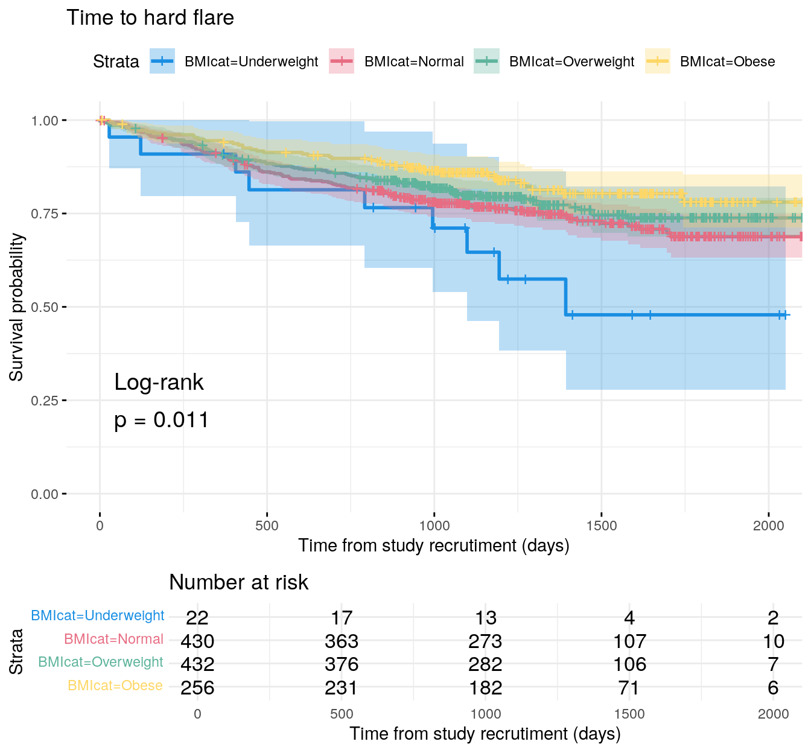
Code
fit.me<-coxph(Surv(hardflare_time, hardflare)~Sex+IMD+cat+BMI+frailty(SiteNo), control =coxph.control(outer.max =20), data =flare.uc.df)invisible(cox.summary(fit.me))
fit.me<-coxph(Surv(hardflare_time, hardflare)~Sex+IMD+cat+BMIcat+frailty(SiteNo), control =coxph.control(outer.max =20), data =flare.uc.df)invisible(cox.summary(fit.me))